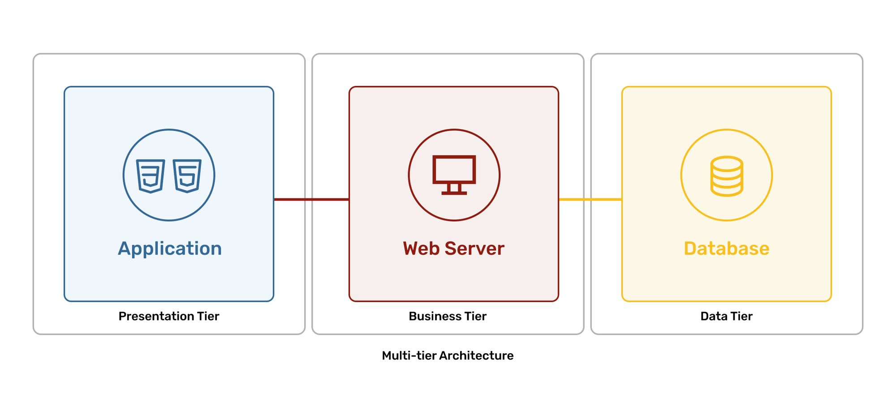

Multitier Architecture

Multitier architecture separates applications into layers such as presentation, business logic, and data storage. It improves scalability, maintainability, and security.
Tiers
- Presentation tier: user interface and browser interactions.
- Logic tier: application processing and business rules.
- Data tier: databases and data storage.
Back to Home